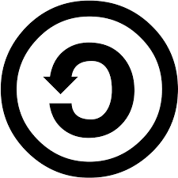
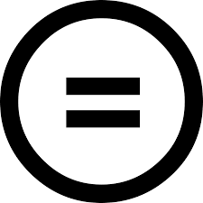
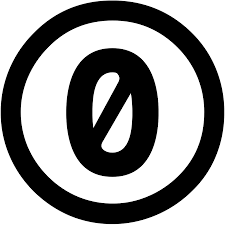
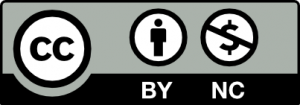
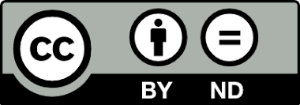
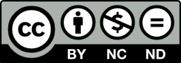

Aspects légaux des logiciels
Contenus de la section
2-1 Définition des contraintes
Temps requis
30 minutes
Clause de non-responsabilité
Aucune des informations contenues dans ce document ne constitue un avis juridique ou ne devrait être interprétée comme telle.
La distribution des logiciels comprend plusieurs aspects légaux, notamment dans la sollicitation par courriel est le droit d'auteur, ainsi que les licences. Les aspects de confidentialité des données personnelles sont traités dans un autre cours.
La loi canadienne antipourriel
La Loi visant à promouvoir l’efficacité et la capacité d’adaptation de l’économie canadienne par la réglementation de certaines pratiques qui découragent l’exercice des activités commerciales par voie électronique et modifiant la Loi sur le Conseil de la radiodiffusion et des télécommunications canadiennes, la Loi sur la concurrence, la Loi sur la protection des renseignements personnels et les documents électroniques et la Loi sur les télécommunications définies des balises pour les communications électroniques. En voici certains articles :
Définitions de la loi
Activité commerciale : Tout acte isolé ou activité régulière qui revêt un caractère commercial, que la personne qui l’accomplit le fasse ou non dans le but de réaliser un profit, à l’exception de tout acte ou activité accomplis à des fins d’observation de la loi, de sécurité publique, de protection du Canada, de conduite des affaires internationales ou de défense du Canada.
Adresse électronique : Toute adresse utilisée relativement à la transmission d’un message électronique à l’un des comptes suivants :
a) un compte courriel;
b) un compte messagerie instantanée;
c) un compte téléphone;
d) tout autre compte similaire.
Donc les messages électroniques couverts dans la loi comprennent, en plus des courriels, les messageries instantanées des réseaux sociaux, les textos et appels ou tout autre mécanisme de communication électronique assimilable au courriel (comme un intranet).
Définition du message électronique commercial (article 1)
(2) Pour l’application de la présente loi, est un message électronique commercial le message électronique dont il est raisonnable de conclure [...] qu’il a pour but, entre autres, d’encourager la participation à une activité commerciale et, notamment, tout message électronique qui, selon le cas :
a) comporte une offre d’achat, de vente, de troc ou de louage d’un produit, bien, service, terrain ou droit ou intérêt foncier;
b) offre une possibilité d’affaires, d’investissement ou de jeu;
c) annonce ou fait la promotion d’une chose ou possibilité mentionnée aux alinéas a) ou b);
d) fait la promotion d’une personne, y compris l’image de celle-ci auprès du public, comme étant une personne qui accomplit — ou à l’intention d’accomplir — un des actes mentionnés aux alinéas a) à c).
(3) Le message électronique comportant une demande de consentement en vue de la transmission d’un message visé au paragraphe (2) est aussi considéré comme un message électronique commercial.
Ce qu'on peut en comprendre est qu'une communication électronique (non limitée au courriel) dans le but de demander si recevoir des offres les intéresse est aussi un message électronique commercial.
Normes des messages électroniques commerciaux (article 6)
(1) Il est interdit d’envoyer à une adresse électronique un message électronique commercial, de l’y faire envoyer ou de permettre qu’il y soit envoyé, sauf si :
a) la personne à qui le message est envoyé a consenti expressément ou tacitement à le recevoir;
b) le message est conforme au paragraphe (2).
(2) Le message doit respecter les exigences réglementaires quant à sa forme et comporter, à la fois :
a) les renseignements réglementaires permettant d’identifier la personne qui l’a envoyé ainsi que, le cas échéant, celle au nom de qui il a été envoyé;
b) les renseignements permettant à la personne qui l’a reçu de communiquer facilement avec l’une ou l’autre des personnes visées à l’alinéa a);
c) la description d’un mécanisme d’exclusion conforme au paragraphe 11(1).
Donc lors d'envoi de message électronique à but commercial est interdit à toute personne qui n'a pas exprimé le souhait (consenti) d'en recevoir. Le « porte à porte » électronique est aussi interdit en incluant les messages de sollicitation dans les messages électroniques commerciaux. Également, permettre la distribution (volontairement concevoir une plateforme qui le permet ou manquer de diligence dans les contrôles d'une plateforme) est aussi interdit par la loi.
Finalement, les communications doivent identifier clairement l'expéditeur, comment le rejoindre et une façon simple de s'exclure de la liste de diffusion.
Messages électroniques commerciaux exclus de la loi (article 6)
(5) Le présent article ne s’applique pas aux messages électroniques commerciaux suivants :
a) les messages qui sont envoyés par une personne physique ou au nom de celle-ci à une autre, si ces personnes ont entre elles des liens familiaux ou personnels, au sens des règlements;
b) les messages qui sont envoyés à une personne qui exerce des activités commerciales et qui constituent uniquement une demande — notamment une demande de renseignements — portant sur ces activités;
c) les messages qui font partie d’une catégorie réglementaire ou qui sont envoyés dans les circonstances précisées par règlements.
(6) L’alinéa (1)a) ne s’applique pas aux messages électroniques commerciaux qui sont uniquement, selon le cas :
a) des messages qui donnent, à la demande des personnes qui les reçoivent, un prix ou une estimation pour la fourniture de biens, produits, services, terrains ou droits ou intérêts fonciers;
b) des messages qui facilitent, complètent ou confirment la réalisation d’une opération commerciale que les personnes qui les reçoivent ont au préalable accepté de conclure avec les personnes qui les ont envoyés ou, le cas échéant, celles au nom de qui ils ont été envoyés;
c) des messages qui donnent des renseignements en matière de garantie, de rappel ou de sécurité à l’égard de biens ou produits utilisés ou achetés par les personnes qui reçoivent ces messages ou de services obtenus par celles-ci;
[...]
Donc la sollicitation de notre entourage ne constitue pas une violation de la loi pas plus que d'écrire à quelqu'un pour lui demander des informations sur un service. Les autres exceptions (il y en a plus que celles présentées) concernent principalement des situations où une relation d'affaires existe et que les communications électroniques permettent de conclure cette relation (vente, contrat, rappel, garantie, renouvellement d'abonnement, salaire et régime de prestation, envoi de facture électronique...).
Dans ces cas, la participation à la relation d'affaires (ou la nécessité de communiquer) fait office de consentement. Évidemment, si l'une des parties se retire de la relation (comme la résiliation d'un abonnement), la loi ne permet pas de solliciter de nouveau l'autre partie sans son consentement.
Pénalités financières
En cas de non-respect de la loi, des pénalités entre 10 000 $ et 25 000 $ peuvent être appliquées.
Droit d'auteur (copyright)
Le droit d'auteur est le droit exclusif de produire, de reproduire, de publier ou d'exécuter une œuvre originale de nature littéraire, artistique, dramatique ou musicale. Le créateur est généralement le titulaire du droit d'auteur. Toutefois, un employeur (par exemple un studio cinématographique) peut détenir le droit d'auteur sur les œuvres créées par ses employés, à moins d'avoir conclu un accord prévoyant le contraire.
Dans sa plus simple expression, le « droit d'auteur » signifie le « droit de reproduire ». En général, le droit d'auteur désigne le droit exclusif de produire ou de reproduire la totalité ou une partie importante d'une l'œuvre sous une forme quelconque.
En général, le droit d'auteur demeure valide pendant toute la vie de l'auteur, puis pour une période de 70 ans suivant la fin de l'année civile de son décès. Par conséquent, la protection inhérente au droit d'auteur prend fin le 31 décembre de la soixante-dixième année suivant le décès de l'auteur.
Office de la propriété intellectuelle du Canada, 2023a, 2023b
Les programmes informatiques tombent dans la catégorie des oeuvres littéraires
Littéraire — Ce sont des œuvres formées de texte, notamment les livres, les brochures, les conférences (allocutions, discours, sermons, etc.), les tableaux et les traductions. Les programmes d'ordinateur font également partie de cette catégorie.
Office de la propriété intellectuelle du Canada, 2023a
Un droit d'auteur est reconnu tacitement lors de la création d'une oeuvre. Pour faire reconnaître un droit d'auteur formellement, il est possible d'enregistrer l'oeuvre, ce qui demande de payer des frais. Principalement, un droit d'autre empêche de reproduire une oeuvre sans permission de la personne autrice originale. Toutefois, un droit d'auteur ne constitue pas un brevet et ne garantit pas l'exclusivité des algorithmes ou des méthodes utilisées.
Il est aussi possible de céder les privilèges liés aux droits d'auteur par le biais d'une entente ou d'une licence. Si aucune licence n'est indiquée sur un élément, il est réputé être protégé par un droit d'auteur.
Les licences logicielles
Les licences logicielles donnent un droit d'utilisation, de modification ou de distribution d'un logiciel. Voici les cinq licences logicielles les plus communes :
{kind=link}
{kind=link}
{kind=link}
{kind=link}
Toutes les licences (sauf la privée) excluent la garantie du service offert. Toutefois, si vous demandez un paiement pour un logiciel, vous avez à garantir raisonnablement votre travail.
Crative Commons, licences des autres productions numériques
Les licences Creative Commons précisent les conditions de partage des produits numériques (elles n'y sont pas limitées, mais on ne les voit pas en pratique sur d'autres éléments).
{kind=link}
Les 5 clauses de conditions d'utilisation des licences Creative Commons sont :
| Logo | Lettre | Signification |
|---|---|---|
| BY | Obligation de mention de la personne autrice (by) | |
| NC | Le contenu ne peut pas être utilisé de façon commerciale (non commercial) | |
 |
SA | Obligation de conserver les conditions si repartagées (share alike) |
 |
ND | Interdiction de modifier le contenu (non derivative) |
  |
0 | Domaine public, cela ne permet pas d'usuper le droit d'auteur (public domain) |
{kind=link}
{kind=link}
{kind=link}
{kind=link}
{kind=link}
De ces 4 clauses sont dérivés les 7 types de licences de Creative Commons
| Logo | Lettre | Signification |
|---|---|---|
| CC BY | Attribution de l'auteur | |
| CC BY-SA | Attribution et partage dans les mêmes conditions | |
 |
CC BY-NC | Attribution de l'auteur et utilisation commerciale interdite |
 |
CC BY-NC-SA | Attribution de l'auteur, utilisation commerciale interdite et partage dans les mêmes conditions |
 |
CC BY-ND | Attribution et interdiction de modification |
 |
CC BY-NC-ND | Attribution de l'auteur, utilisation commerciale interdite et interdiction de modification |
| CC 0 | Domaine public |
{kind=link}
{kind=link}
{kind=link}
{kind=link}
{kind=link}
{kind=link}
Domaine public
On peut utiliser les éléments du domaine public sans condition et sans en mentionner la source. Toutefois, on ne peut pas en usurper la création (et en contexte scolaire, on ne peut pas se soustraire en un plagiat en utilisant des éléments du domaine public...).
{kind=link}
{kind=link}
Exemple d'utilisation
L'intégralité des notes de cours qui vous sont rendues disponibles sur ce site l’est sous licence , sauf pour les contenus empruntés avec des licences plus restrictives.
Autre licence
Il existe d'autres licences spécialisées pour le partage de bases de données par exemple. Il peut être utile de s'informer avant de partager publiquement un médium d'information.
Références
Creative Commons. (2023, 28 septembre). About CC licenses. Creative Commons. https://creativecommons.org/share-your-work/cclicenses/
GitHub . (n.d.). Licenses. Choose a License. https://choosealicense.com/licenses/
Loi visant à promouvoir l’efficacité et la capacité d’adaptation de l’économie canadienne par la réglementation de certaines pratiques qui découragent l’exercice des activités commerciales par voie électronique et modifiant la Loi sur le Conseil de la radiodiffusion et des télécommunications canadiennes, la Loi sur la concurrence, la Loi sur la protection des renseignements personnels et les documents électroniques et la Loi sur les télécommunications, L.C. 2010, ch. 23 Accessible au https://laws-lois.justice.gc.ca/fra/lois/E-1.6/page-1.html
Loi de la protection du consommateur, RLRQ, ch. P-40.1 Accessible au https://www.legisquebec.gouv.qc.ca/fr/document/lc/p-40.1
Office de la propriété intellectuelle du Canada. (2023, 10 janvier). Le guide du droit d'auteur ? Canada.ca. https://ised-isde.canada.ca/site/office-propriete-intellectuelle-canada/fr/guide-droit-dauteur
Office de la propriété intellectuelle du Canada. (2023, 10 janvier). Qu’est-ce que le droit d’auteur? Canada.ca. https://ised-isde.canada.ca/site/office-propriete-intellectuelle-canada/fr/quest-propriete-intellectuelle/quest-droit-dauteur